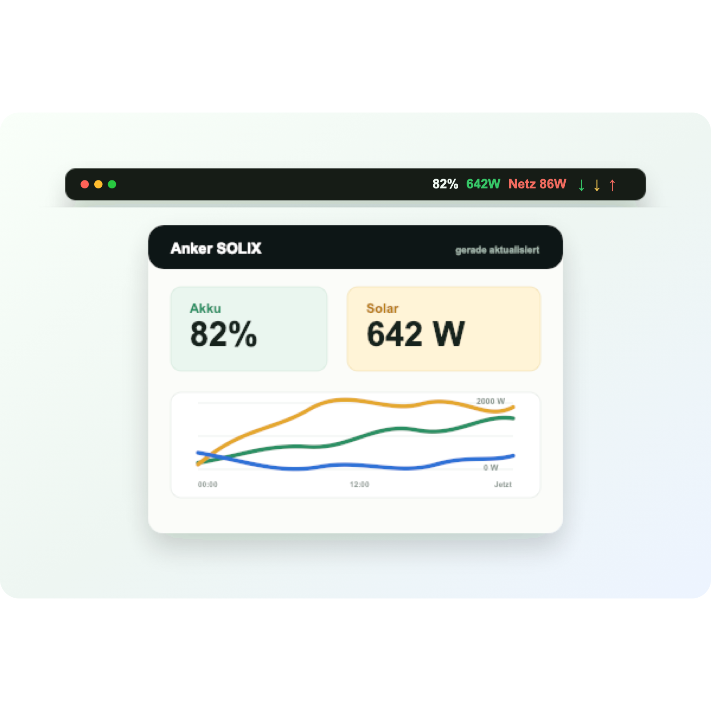
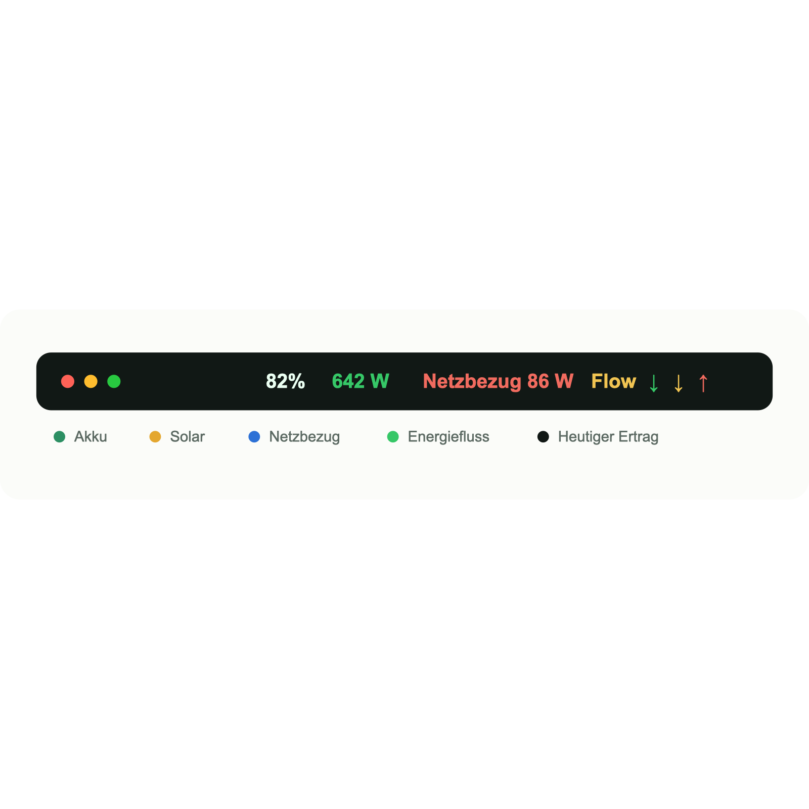
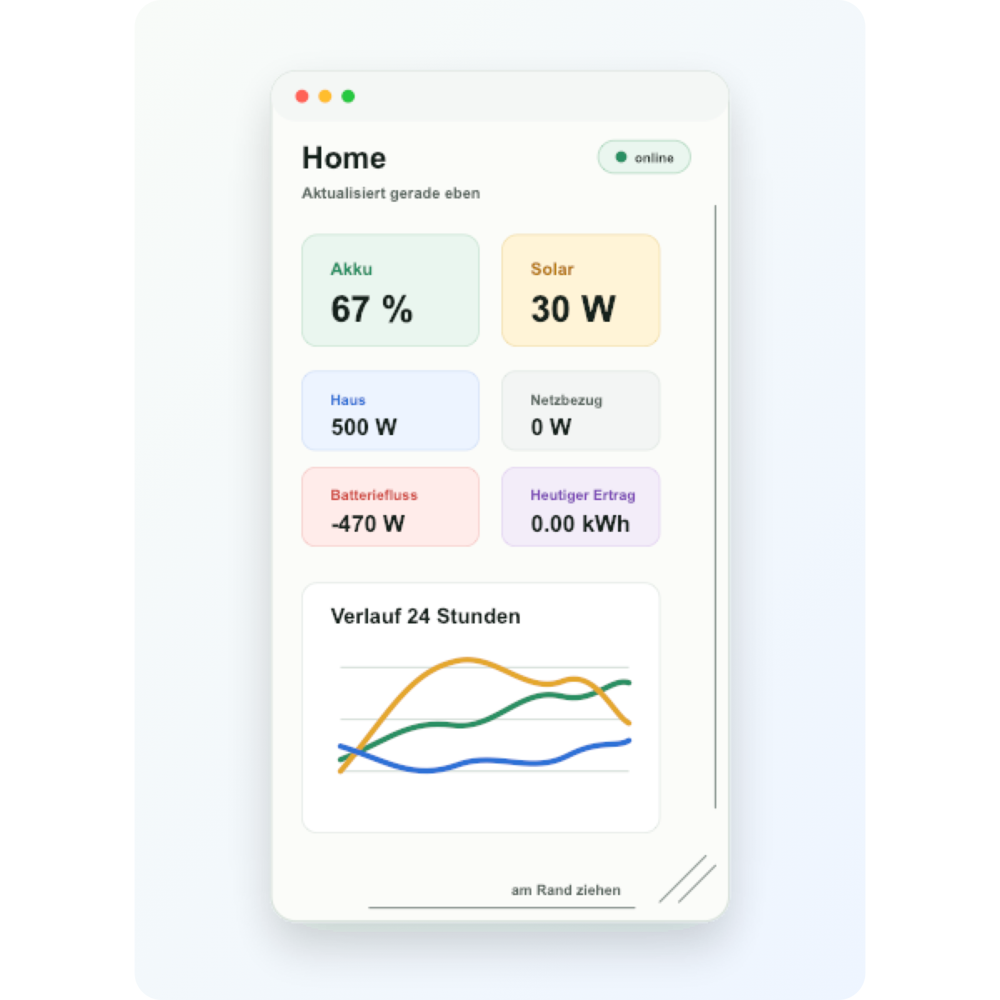
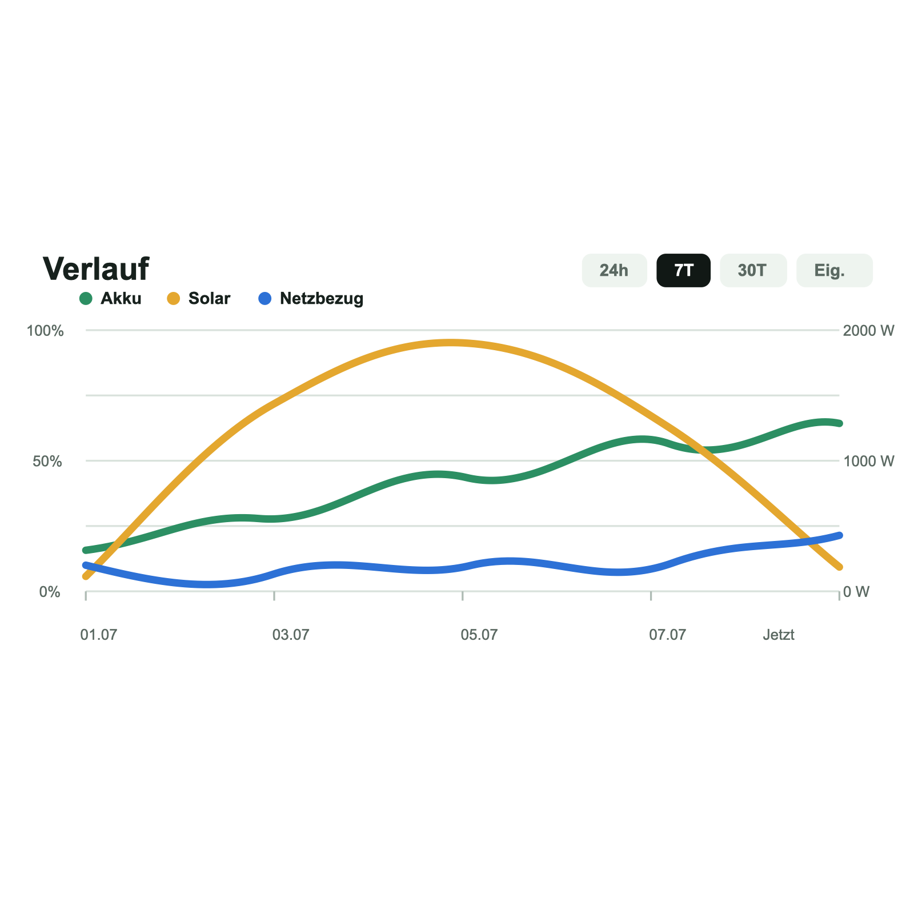

Menueleiste
Waehle selbst, welche Werte angezeigt werden: Akku, Solar, Zuhause, Netzbezug, Batteriestrom, Energiefluss, heutiger Ertrag und Gesamtertrag.
macOS Menueleisten-App fuer Anker SOLIX
Behalte Akku, Solarertrag, Netzbezug, Verbrauch und Energiefluss direkt in der Menueleiste im Blick, mit SOLIX Login in der App, modernem Dashboard, animiertem Verlaufsgraf und frei waehlbarer Anzeige.

Uebersicht
Waehle selbst, welche Werte angezeigt werden: Akku, Solar, Zuhause, Netzbezug, Batteriestrom, Energiefluss, heutiger Ertrag und Gesamtertrag.
Das Aufklappmenue zeigt die wichtigsten Daten gross, klar lesbar und kann als eigenes Fenster unter der Menueleiste abgedockt werden. Zusaetzlich gibt es eine schmale abgedockte Leiste fuer die reinen Menueleistenwerte mit gespeichertem Zustand.
Akku, Solar und Netzbezug lassen sich animiert fuer Aktuell, 24 Stunden, 7 Tage, 30 Tage oder individuell betrachten, mit dichterer Zeitachse.
Ein eigenes schwebendes Fenster zeigt die SOLIX-Daten sauber auf dem Schreibtisch und nutzt die native macOS-Fensterskalierung.
SolixBar kann Demo-Daten, den vorbereiteten lokalen SOLIX-Befehl oder eine JSON-URL verwenden. Die Einstellungen zeigen nur die passenden Felder zur Auswahl.
Zugangsdaten und lokale Laufzeitdateien gehoeren nicht ins Repository und werden bewusst ausgeschlossen.
Screenshots
Die App ist fuer den taeglichen Blick auf deine SOLIX-Anlage gedacht: kompakt in der Menueleiste mit farbigen Fluss-Pfeilen, detailliert beim Klick und mit animiertem Graphen bei Bedarf.



Installation
Aktuelle Version herunterladen und SolixBar starten.
SolixBar-0.1.20.zip
In Einstellungen -> Datenquelle den lokalen JSON-Befehl waehlen und Mail, Passwort sowie Land eintragen.
Demo, lokaler SOLIX-Befehl oder JSON-URL lassen sich jederzeit sauber umschalten.